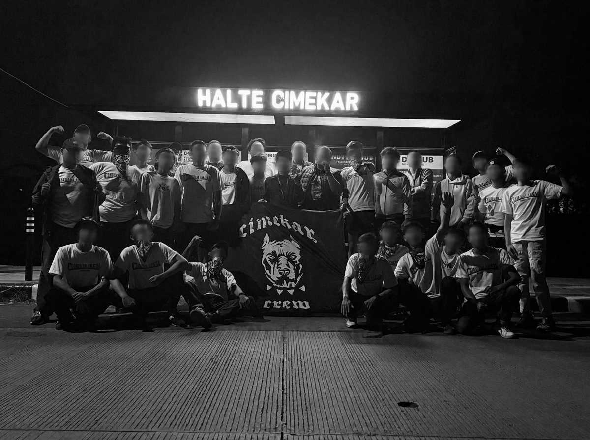

Halaman

Beware Of Dogs Organize
Beware of Dogs (BOD) was built by crews from East Bandung who share a deep passion for the local scene and culture. What started as a move to create a solid space for everyone to kick it has turned into a dedicated organizer, throwing events made by crews, for crews to pull up and enjoy. We’re big on keeping the local energy alive, regularly collaborating with underground and local bands from around Bandung to showcase raw talent and support the city’s music scene. At its heart, BOD is a hub—a place for different crews across Bandung to catch up, build connections, and stay united. No matter where we come from, we’re all moving with the same mindset and standing behind one shared passion: supporting our beloved Persib Bandung.
New Collaboration
Beware of Dogs (BOD) is taking things up a notch by joining forces with Terrace Voice for a fresh collaboration rooted straight in the heart of the stands and local culture. As a band that breathes the true spirit of supporters' culture and local pride, Terrace Voice brings an undeniable energy that aligns perfectly with what BOD stands for. This partnership isn't just about putting on another show; it’s about bringing the community together, turning the noise from the terraces into pure electricity on stage, and celebrating our shared identity. Expect heavy anthems, tight-knit camaraderie, and an atmosphere built by the fans, for the fans. Together, BOD and Terrace Voice are proving once again that when local passion and music collide, the spirit for Persib Bandung only runs deeper.